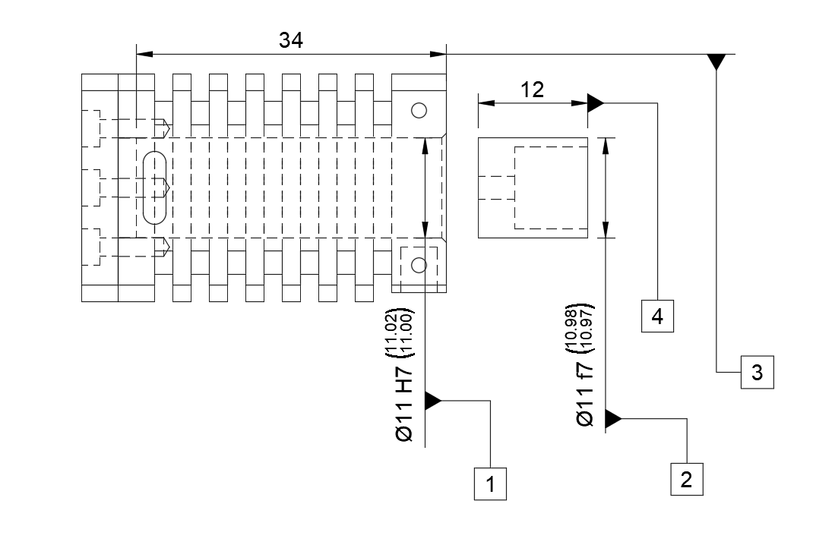

FAI REPORTCONTROLLED DOCUMENT · DATUM PROTOTYPING
Document IDFAI-01-FLAME
RevisionA
Issued2026-10-06
Page1 / 1
01 / EMNEOPLYSNINGER
Cylinder & Stempel.
REPORT ID: FAI-01-FLAME
02 / TEGNINGSREFERENCE

03 / MÅLKONTROL
Rul tabellen til siden for at se alle kolonner →
| NO. | CHARACTERISTIC / FEATURE | NOMINAL | TOLERANCE | ACTUAL | STATUS |
|---|---|---|---|---|---|
| 1 | Cylinder Inder-Ø | 11.000 mm | +0.018 / 0.000 (H7) | 11.005 mm | Pass |
| 2 | Stempel Yder-Ø | 11.000 mm | -0.016 / -0.034 (f7) | 10.975 mm | Pass |
| 3 | Cylinder Inder-Længde | 34.000 mm | ±0.100 | 34.005 mm | Pass |
| 4 | Stempel Ydre-Længde | 12.000 mm | ±0.100 | 11.950 mm | Pass |
04 / BEMÆRKNINGER & GODKENDELSE
Kritisk spillerum på 0.030 mm verificeret. Termisk ekspansion simuleret og godkendt til driftstæthed.
Glen
AUTHORIZED INSPECTOR SIGNATURE